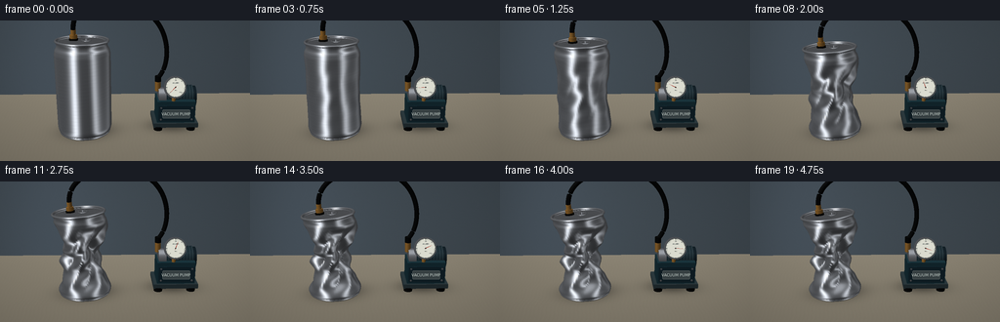
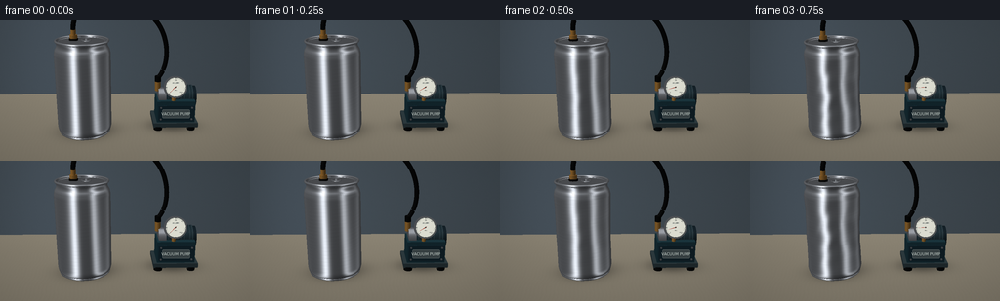
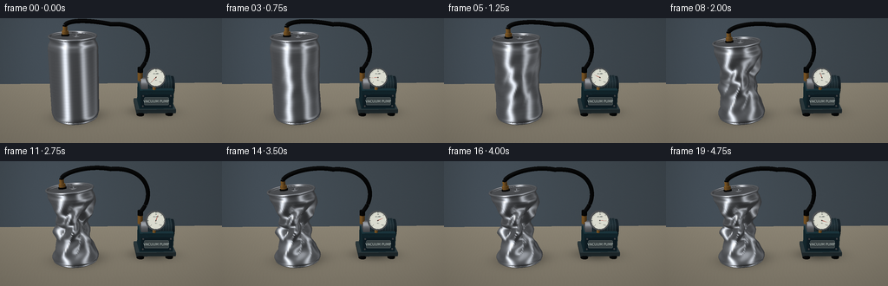
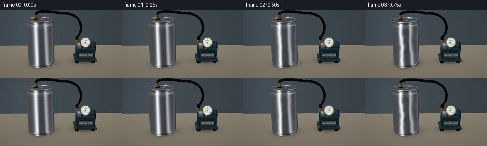

CODING AGENTS AS PIXEL WORLD MODELS
traex/GPT-6.1-Sol · phygen_017
点击播放 · 原生 RGB 像素
逐轮保存的候选
回放视频、检查图与代码变化。
每份候选均可单独播放。实际图片检查记录在下方工具轨迹中。
候选 01播放与检查图
点击播放 · 原生 RGB 像素


展开代码变化
--- 上一保存版本
+++ 本次保存版本
@@ -0,0 +1,360 @@
+"""Procedural RGB timelapse of vacuum-induced buckling of a sealed aluminum can.
+Only numpy/Pillow and a small mathematical triangle rasterizer are used.
+"""
+from pathlib import Path
+import math
+import numpy as np
+from PIL import Image, ImageDraw, ImageFilter, ImageFont
+import artifact_io
+
+ROOT = Path(__file__).resolve().parent
+S = 3
+W,H = 256*S,144*S
+EYE=np.array([0.,-7.4,3.45])
+TARGET=np.array([.15,0.,.95])
+FWD=(TARGET-EYE); FWD/=np.linalg.norm(FWD)
+RIGHT=np.cross(FWD,[0,0,1.]); RIGHT/=np.linalg.norm(RIGHT)
+UP=np.cross(RIGHT,FWD)
+FOCAL=1120.
+CX,CY=W/2,H/2
+CANX=-.73
+
+def unit(v):
+ return v/np.maximum(np.linalg.norm(v,axis=-1,keepdims=True),1e-9)
+
+def project(p):
+ p=np.asarray(p)-EYE
+ z=p@FWD
+ return np.stack((CX+FOCAL*(p@RIGHT)/z,CY-FOCAL*(p@UP)/z,z),axis=-1)
+
+class Raster:
+ def __init__(self, img):
+ self.im=np.asarray(img,dtype=np.float32).copy()
+ self.depth=np.full((H,W),np.inf,dtype=np.float32)
+ def mesh(self, vertices, faces, normals=None, material='metal', color=(.3,.35,.4), rough=0):
+ v=np.asarray(vertices,float)
+ f=np.asarray(faces,int)
+ if normals is None:
+ # Flat-shaded meshes get duplicated vertices for crisp machined edges.
+ q=v[f]; n=unit(np.cross(q[:,1]-q[:,0],q[:,2]-q[:,0]))
+ v=q.reshape(-1,3); normals=np.repeat(n,3,axis=0)
+ f=np.arange(len(v)).reshape(-1,3)
+ n=unit(np.asarray(normals,float))
+ view=unit(EYE-v)
+ light=unit(np.array([-.65,-.55,1.1]))
+ nd=np.maximum(0,n@light)
+ if material=='metal':
+ r=2*np.sum(n*view,axis=-1)[:,None]*n-view
+ base=.17+.16*(r[:,2]+1)/2
+ key=.74*np.exp(-((r[:,0]+.50)/.24)**2)*np.exp(-((r[:,1]+.64)/.8)**2)
+ fill=.49*np.exp(-((r[:,0]-.72)/.17)**2)*np.exp(-((r[:,1]+.40)/.9)**2)
+ overhead=.23*np.exp(-((r[:,2]-.96)/.18)**2)
+ val=base+key+fill+overhead+.095*nd
+ # Microscopic brushing follows the metal, not the screen.
+ brush=1+.011*np.sin(v[:,2]*1650+v[:,0]*14)+.008*np.sin(v[:,2]*513)
+ col=np.stack([val*.96,val*.985,val*1.025],axis=-1)*brush[:,None]
+ if rough:
+ col*=rough
+ elif material=='brass':
+ r=2*np.sum(n*view,axis=-1)[:,None]*n-view
+ k=np.maximum(0,r@unit(np.array([-.5,-.7,1.])))**18
+ col=np.array([.64,.45,.20])[None,:]*(.38+.62*nd[:,None])+k[:,None]*.65
+ else:
+ color=np.asarray(color)
+ half=unit(view+light)
+ spec=np.maximum(0,np.sum(n*half,axis=-1))**(28 if material=='paint' else 12)
+ col=color[None,:]*(.30+.70*nd[:,None])+spec[:,None]*(.12 if material=='paint' else .028)
+ col=np.clip(col*255,0,255)
+ p=project(v)
+ for tri in f:
+ pp=p[tri]; cc=col[tri]
+ x0=max(0,int(np.floor(pp[:,0].min()))); x1=min(W-1,int(np.ceil(pp[:,0].max())))
+ y0=max(0,int(np.floor(pp[:,1].min()))); y1=min(H-1,int(np.ceil(pp[:,1].max())))
+ if x1<x0 or y1<y0 or np.min(pp[:,2])<=0: continue
+ a,b,c=pp
+ den=(b[1]-c[1])*(a[0]-c[0])+(c[0]-b[0])*(a[1]-c[1])
+ if abs(den)<1e-7: continue
+ yy,xx=np.mgrid[y0:y1+1,x0:x1+1]
+ x=xx+.5; y=yy+.5
+ wa=((b[1]-c[1])*(x-c[0])+(c[0]-b[0])*(y-c[1]))/den
+ wb=((c[1]-a[1])*(x-c[0])+(a[0]-c[0])*(y-c[1]))/den
+ wc=1-wa-wb
+ inside=(wa>=-1e-6)&(wb>=-1e-6)&(wc>=-1e-6)
+ iz=wa/a[2]+wb/b[2]+wc/c[2]
+ z=1/np.maximum(iz,1e-10)
+ dep=self.depth[y0:y1+1,x0:x1+1]
+ mask=inside&(z<dep)
+ if not np.any(mask): continue
+ rgba=(wa[...,None]*cc[0]/a[2]+wb[...,None]*cc[1]/b[2]+wc[...,None]*cc[2]/c[2])/iz[...,None]
+ dep[mask]=z[mask]
+ self.im[y0:y1+1,x0:x1+1][mask]=rgba[mask]
+ def image(self): return Image.fromarray(np.uint8(np.clip(self.im,0,255)))
+
+def grid_faces(n,m,wrap=True):
+ f=[]
+ for i in range(n-1):
+ for j in range(m if wrap else m-1):
+ k=(j+1)%m
+ a=i*m+j; b=i*m+k; c=(i+1)*m+j; d=(i+1)*m+k
+ f.extend([(a,b,c),(b,d,c)])
+ return np.array(f)
+
+def grid_normals(v):
+ du=np.roll(v,-1,axis=1)-np.roll(v,1,axis=1)
+ dv=np.gradient(v,axis=0)
+ return unit(np.cross(du,dv)).reshape(-1,3)
+
+def tube(r, path, radius, material='rubber',color=(.05,.055,.06),sides=12):
+ path=np.asarray(path)
+ tang=unit(np.gradient(path,axis=0))
+ ref=np.tile([0.,0.,1.],(len(path),1))
+ ref[np.abs(tang[:,2])>.92]=[1,0,0]
+ x=unit(np.cross(tang,ref)); y=np.cross(tang,x)
+ theta=np.arange(sides)*2*np.pi/sides
+ dirs=x[:,None,:]*np.cos(theta)[None,:,None]+y[:,None,:]*np.sin(theta)[None,:,None]
+ rad=np.asarray(radius)
+ if rad.ndim==0: rad=np.full(len(path),rad)
+ v=path[:,None,:]+rad[:,None,None]*dirs
+ r.mesh(v.reshape(-1,3),grid_faces(len(path),sides),dirs.reshape(-1,3),material,color)
+
+def cylinder(r,a,b,radius,material='metal',color=(.2,.25,.3), sides=36):
+ a=np.asarray(a,float); b=np.asarray(b,float)
+ t=unit(b-a); x=unit(np.cross(t, [0,1.,0] if abs(t[1])<.9 else [1.,0,0])); y=np.cross(t,x)
+ th=np.arange(sides)*2*np.pi/sides
+ dirs=np.cos(th)[:,None]*x+np.sin(th)[:,None]*y
+ verts=np.concatenate([a+radius*dirs,b+radius*dirs])
+ r.mesh(verts,grid_faces(2,sides),np.tile(dirs,(2,1)),material,color)
+ for cen,n in [(a,-t),(b,t)]:
+ vv=np.vstack([cen,cen+radius*dirs]); ff=np.array([(0,i+1,(i+1)%sides+1) for i in range(sides)])
+ r.mesh(vv,ff,np.tile(n,(len(vv),1)),material,color)
+
+def box(r,lo,hi,color=(.18,.25,.29),material='paint'):
+ lo=np.array(lo); hi=np.array(hi)
+ v=np.array([[lo[0],lo[1],lo[2]],[hi[0],lo[1],lo[2]],[hi[0],hi[1],lo[2]],[lo[0],hi[1],lo[2]],
+ [lo[0],lo[1],hi[2]],[hi[0],lo[1],hi[2]],[hi[0],hi[1],hi[2]],[lo[0],hi[1],hi[2]]])
+ f=np.array([[0,2,1],[0,3,2],[4,5,6],[4,6,7],[0,1,5],[0,5,4],[1,2,6],[1,6,5],[2,3,7],[2,7,6],[3,0,4],[3,4,7]])
+ r.mesh(v,f,material=material,color=color)
+
+def topmap(local,amount):
+ loc=np.asarray(local).copy()
+ alpha=-.085*amount
+ x=loc[...,0]*np.cos(alpha)+loc[...,2]*np.sin(alpha)
+ z=-loc[...,0]*np.sin(alpha)+loc[...,2]*np.cos(alpha)
+ loc[...,0]=x;loc[...,2]=z
+ return loc+np.array([CANX-.10*amount,.015*amount,.04+2*(1-.14*amount)])
+
+def torus(r,center,major,minor,amount=0,top=False,material='metal',n=72,m=10):
+ th=np.arange(n)*2*np.pi/n; ph=np.arange(m)*2*np.pi/m
+ x=(major+minor*np.cos(ph)[None,:])*np.cos(th)[:,None]
+ y=(major+minor*np.cos(ph)[None,:])*np.sin(th)[:,None]
+ z=np.broadcast_to(minor*np.sin(ph)[None,:],x.shape)
+ v=np.stack([x,y,z],axis=-1).transpose(1,0,2)
+ norm=np.stack([np.cos(ph)[None,:]*np.cos(th)[:,None],np.cos(ph)[None,:]*np.sin(th)[:,None],np.broadcast_to(np.sin(ph)[None,:],x.shape)],axis=-1).transpose(1,0,2)
+ if top:
+ v=topmap(v+np.asarray(center),amount)
+ al=-.085*amount
+ nx=norm[...,0]*np.cos(al)+norm[...,2]*np.sin(al)
+ nz=-norm[...,0]*np.sin(al)+norm[...,2]*np.cos(al)
+ norm[...,0]=nx;norm[...,2]=nz
+ else: v+=center
+ # Torus wraps both dimensions.
+ f=[]
+ for i in range(m):
+ for j in range(n):
+ a=i*n+j;b=i*n+(j+1)%n;c=((i+1)%m)*n+j;d=((i+1)%m)*n+(j+1)%n
+ f.extend([(a,b,c),(b,d,c)])
+ r.mesh(v.reshape(-1,3),f,norm.reshape(-1,3),material)
+
+def can_body(r,amount):
+ n,m=70,100
+ vv=np.linspace(0,1,n)[:,None]; th=np.arange(m)[None,:]*2*np.pi/m
+ profile=np.interp(vv[:,0],[0,.018,.04,.075,.87,.915,.94,.97,1],[.525,.54,.57,.585,.585,.565,.53,.525,.55])[:,None]
+ env=np.sin(np.pi*np.clip((vv-.05)/.90,0,1))**1.15
+ # Several displaced folds create a non-axisymmetric thin-shell collapse.
+ tri=lambda a: 2/np.pi*np.arcsin(np.sin(a))
+ broad=.5+.20*np.cos(2*th+.4+vv*1.5)
+ dents=.11*np.cos(3*th+vv*7)+.068*tri(5*th-vv*9+.8)
+ ridge=.040*np.sin(vv*31+2.3*np.sin(th*2))*env
+ rr=profile*(1-amount*env*broad)+amount*env*dents+amount*ridge
+ rr=np.maximum(rr,.11)
+ # Tiny initial dimpling transitions into permanent creases, never expansion.
+ x=rr*np.cos(th)+CANX-.10*amount*vv**3+.042*amount*env*np.sin(vv*9)
+ y=rr*np.sin(th)+.015*amount*vv**3+.035*amount*env*np.sin(vv*6+1)
+ z=.04+2*vv*(1-.14*amount)+.085*amount*(rr*np.cos(th))*vv**5+.033*amount*env*np.sin(3*th+vv*8)
+ z=np.broadcast_to(z,x.shape)
+ vertices=np.stack([x,y,z],axis=-1)
+ normals=grid_normals(vertices)
+ r.mesh(vertices.reshape(-1,3),grid_faces(n,m),normals,'metal')
+ torus(r,[CANX,0,.067],.528,.028)
+ torus(r,[CANX,0,.093],.542,.012)
+ # The rolled rim and unopened lid survive; only the thin sidewall caves in.
+ torus(r,[0,0,0],.541,.024,amount,True)
+ torus(r,[0,0,-.025],.529,.013,amount,True)
+ rings=np.array([0,.13,.36,.46,.493,.517,.53])
+ th=np.arange(100)*2*np.pi/100
+ zz=np.array([-.028,-.026,-.023,-.023,-.018,-.031,-.008])
+ loc=np.stack([rings[:,None]*np.cos(th)[None,:],rings[:,None]*np.sin(th)[None,:],np.broadcast_to(zz[:,None],(len(rings),100))],axis=-1)
+ v=topmap(loc,amount)
+ r.mesh(v.reshape(-1,3),grid_faces(len(rings),100),np.tile(unit(np.array([-.085*amount,0,1.])),(v.size//3,1)),'metal',rough=.87)
+ torus(r,[0,0,-.018],.474,.007,amount,True)
+ # Closed embossed pull tab. A small ring, not a hole through the lid.
+ th=np.arange(36)*2*np.pi/36
+ ph=np.arange(8)*2*np.pi/8
+ xx=(.087+.021*np.cos(ph)[:,None])*np.cos(th)[None,:]+.095
+ yy=(.145+.021*np.cos(ph)[:,None])*np.sin(th)[None,:]-.025
+ zz=np.broadcast_to(.016+.012*np.sin(ph)[:,None],xx.shape)
+ tv=np.stack([xx,yy,zz],axis=-1)
+ v=topmap(tv,amount)
+ r.mesh(v.reshape(-1,3),grid_faces(8,36),grid_normals(tv),'metal',rough=.92)
+ a=topmap([.09,.055,-.012],amount); b=topmap([.09,.055,.031],amount)
+ cylinder(r,a,b,.031,'metal',sides=20)
+ # Hermetic vacuum fitting through the lid, with a rubber sealing washer.
+ a=topmap([-.18,.09,-.011],amount); b=topmap([-.18,.09,.025],amount)
+ cylinder(r,a,b,.095,'rubber',(.055,.055,.05))
+ a=topmap([-.18,.09,.016],amount); b=topmap([-.18,.09,.104],amount)
+ cylinder(r,a,b,.080,'brass',sides=6)
+ a=topmap([-.18,.09,.08],amount); b=topmap([-.18,.09,.205],amount)
+ cylinder(r,a,b,.054,'brass',sides=24)
+ return topmap([-.18,.09,.205],amount)
+
+def background():
+ yy,xx=np.mgrid[0:H,0:W]
+ dirs=unit(FWD+(xx[...,None]-CX)/FOCAL*RIGHT-(yy[...,None]-CY)/FOCAL*UP)
+ tt=-EYE[2]/dirs[...,2]
+ ground=EYE+tt[...,None]*dirs
+ wallt=(2.55-EYE[1])/dirs[...,1]
+ wall=EYE+wallt[...,None]*dirs
+ onfloor=(tt>0)&(ground[...,1]<2.55)
+ rng=np.random.default_rng(17)
+ noise=rng.normal(0,.55,(H,W))
+ wallbright=1+.09*np.exp(-((xx-W*.27)/(W*.45))**2)-.08*yy/H
+ bg=np.stack([wallbright*62,wallbright*71,wallbright*78],axis=-1)
+ # Softly defocused laboratory wall with no extraneous props.
+ bg+=np.exp(-((xx-W*.20)/(W*.22))**2)[...,None]*np.array([5.,6.,8.])
+ grain=.6*np.sin(ground[...,0]*80+2*np.sin(ground[...,1]*7))+.25*np.sin(ground[...,0]*280)
+ floorval=1+.025*ground[...,1]+grain*.006
+ floor=np.stack([floorval*131,floorval*124,floorval*109],axis=-1)
+ bg=np.where(onfloor[...,None],floor,bg)+noise[...,None]
+ # Contact and area shadows on the actual ground plane.
+ shade=np.ones((H,W))
+ for x,y,rx,ry,alpha in [(CANX,0,.67,.55,.43),(CANX+.20,.20,.80,.51,.15),(1.23,.30,.70,.50,.44)]:
+ shade-=alpha*np.exp(-(((ground[...,0]-x)/rx)**2+((ground[...,1]-y)/ry)**2)*2)
+ bg=np.where(onfloor[...,None],bg*np.clip(shade,.32,1)[...,None],bg)
+ vign=1-.12*((xx-CX)**2/(W*.68)**2+(yy-CY)**2/(H*.8)**2)
+ return np.uint8(np.clip(bg*vign[...,None],0,255))
+
+BASE=background()
+
+def pump(r):
+ # Compact industrial vacuum pump with an electric motor and pressure dial.
+ for x in [.89,1.62]:
+ for y in [.04,.61]:
+ cylinder(r,[x,y,.02],[x,y,.10],.095,'rubber',(.045,.05,.052),sides=18)
+ box(r,[.78,-.03,.09],[1.77,.74,.19],(.20,.26,.28))
+ box(r,[.86,.02,.19],[1.70,.62,.68],(.12,.24,.28))
+ box(r,[.89,-.005,.23],[1.68,.016,.59],(.10,.19,.23))
+ cylinder(r,[1.08,.42,.67],[1.68,.42,.67],.245,'paint',(.13,.20,.23))
+ for x in np.linspace(1.12,1.66,9):
+ cylinder(r,[x-.014,.42,.67],[x+.014,.42,.67],.265,'paint',(.18,.25,.28),sides=28)
+ cylinder(r,[1.68,.42,.67],[1.75,.42,.67],.239,'paint',(.09,.14,.17))
+ # Finned metallic pump head and hose port.
+ cylinder(r,[.90,.33,.69],[1.07,.33,.69],.218,'metal',sides=32)
+ cylinder(r,[.89,.33,.84],[.89,.33,1.08],.065,'brass',sides=6)
+ # Dial stem and chrome housing are angled toward the stationary camera.
+ cylinder(r,[1.22,.09,.64],[1.22,.09,.92],.043,'brass',sides=16)
+ face=np.array([1.22,-.055,1.04]); normal=unit(np.array([0,-1,.29]))
+ cylinder(r,face-normal*.075,face+normal*.022,.237,'metal',sides=56)
+ # Small front panel screw heads.
+ for x in [.94,1.62]:
+ for z in [.28,.55]:
+ cylinder(r,[x,-.015,z],[x,-.023,z],.022,'metal',sides=12)
+ return face+normal*.028,normal
+
+FONT='/usr/share/fonts/truetype/dejavu/DejaVuSans.ttf'
+FONTS={size:ImageFont.truetype(FONT,size) for size in [12,13,14,17,18]}
+
+def gauge_overlay(im,center,normal,t):
+ # Warp a vector-drawn analog dial into its physical plane.
+ N=260
+ dial=Image.new('RGBA',(N,N),(0,0,0,0)); d=ImageDraw.Draw(dial)
+ d.ellipse((7,7,N-7,N-7),fill=(219,220,208,255),outline=(43,49,49,255),width=4)
+ d.ellipse((13,13,N-13,N-13),outline=(155,159,152,255),width=2)
+ cx=cy=N/2
+ for i in range(31):
+ a=math.radians(135+270*i/30)
+ rr=101 if i%5==0 else 106
+ d.line((cx+rr*math.cos(a),cy+rr*math.sin(a),cx+114*math.cos(a),cy+114*math.sin(a)),fill=(35,41,43,255),width=3 if i%5==0 else 2)
+ d.text((cx,77),'VACUUM',font=FONTS[18],anchor='mm',fill=(34,45,49))
+ d.text((cx,167),'kPa',font=FONTS[18],anchor='mm',fill=(64,68,65))
+ # 0 at lower left, -100 at lower right; increasing vacuum sweeps clockwise.
+ for q,txt in [(0,'0'),(.5,'-50'),(1,'-100')]:
+ a=math.radians(135+270*q)
+ d.text((cx+86*math.cos(a),cy+86*math.sin(a)),txt,font=FONTS[17],anchor='mm',fill=(38,44,45))
+ a=math.radians(135+270*(.90*t))
+ tip=(cx+91*math.cos(a),cy+91*math.sin(a))
+ nx=-math.sin(a)*4;ny=math.cos(a)*4
+ tail=(cx-20*math.cos(a),cy-20*math.sin(a))
+ d.polygon([tip,(cx+nx,cy+ny),tail,(cx-nx,cy-ny)],fill=(163,43,31,255))
+ d.ellipse((cx-8,cy-8,cx+8,cy+8),fill=(46,49,49,255))
+ right=np.array([1.,0,0]);up=np.cross(normal,right)
+ rad=.223
+ points=[]
+ for x,y in [(0,0),(N,0),(N,N),(0,N)]:
+ p=center+right*((x/N-.5)*rad*2)+up*((.5-y/N)*rad*2)
+ points.append(project(p)[:2])
+ # PIL's inverse homography maps frame pixels to dial coordinates.
+ a=[];b=[]
+ for (x,y),(u,v) in zip(points,[(0,0),(N,0),(N,N),(0,N)]):
+ a.extend([[x,y,1,0,0,0,-u*x,-u*y],[0,0,0,x,y,1,-v*x,-v*y]])
+ b.extend([u,v])
+ coeff=np.linalg.solve(np.array(a),np.array(b))
+ layer=dial.transform((W,H),Image.Transform.PERSPECTIVE,coeff,Image.Resampling.BICUBIC)
+ im.paste(layer,(0,0),layer)
+
+def bezier(p,n=80):
+ p=np.asarray(p);t=np.linspace(0,1,n)[:,None]
+ return (1-t)**3*p[0]+3*(1-t)**2*t*p[1]+3*(1-t)*t*t*p[2]+t**3*p[3]
+
+
+def render(i):
+ # Air is removed monotonically. The shell first dents, then buckles sharply.
+ values=[0,0,.025,.065,.12,.19,.28,.39,.53,.65,.74,.80,.85,.90,.94,.965,.985,1,1,1]
+ c=values[i]
+ r=Raster(BASE)
+ face,normal=pump(r)
+ start=can_body(r,c)
+ # Rubber suction line is always connected to the sealed lid and pump.
+ crest=np.array([.15,.26,2.68-.09*c])
+ p1=bezier([start,start+[0,0,.52],[-.40,.25,2.79-.09*c],crest],42)
+ end=np.array([.89,.33,1.08])
+ p2=bezier([crest,[1.06,.27,2.69-.08*c],[1.25,.34,1.53],end+[0,0,.06]],64)
+ path=np.concatenate([p1,p2[1:]])
+ # Slight hose movement during buckling; endpoints are constrained.
+ tt=np.linspace(0,1,len(path))
+ path[:,1]+=.014*np.sin(i*2+tt*11)*np.sin(np.pi*tt)**2*(1 if i<17 else 0)
+ tube(r,path,.051,'rubber',(.040,.044,.046),sides=12)
+ cylinder(r,end-[0,0,.025],end+[0,0,.10],.068,'rubber',(.035,.040,.04),sides=24)
+ im=r.image()
+ gauge_overlay(im,face,normal,min(1,i/17))
+ d=ImageDraw.Draw(im)
+ # Small equipment identification plate; no captions or floating indicators.
+ q=project([1.27,-.028,.42])
+ d.rounded_rectangle((q[0]-42,q[1]-13,q[0]+42,q[1]+13),radius=3,fill=(54,63,65),outline=(103,112,111),width=1)
+ d.text((q[0],q[1]),'VACUUM PUMP',font=FONTS[12],anchor='mm',fill=(195,205,199))
+ # Subtle sensor grain, stable across frames; avoid synthetic sharpness.
+ arr=np.asarray(im).astype(float)
+ noise=np.random.default_rng(42).normal(0,.35,(H,W))
+ arr=np.clip(arr+noise[...,None],0,255).astype(np.uint8)
+ return np.asarray(Image.fromarray(arr).resize((256,144),Image.Resampling.LANCZOS))
+
+
+def main():
+ frames=[]
+ for i in range(20):
+ frames.append(render(i))
+ print(f'Frame {i+1}/20 rendered',flush=True)
+ frames=np.stack(frames).astype(np.uint8)
+ artifact_io.save(frames,ROOT)
+ print('Saved RGB video artifacts.',flush=True)
+
+if __name__=='__main__': main()
候选 02播放与检查图
点击播放 · 原生 RGB 像素


展开代码变化
--- 上一保存版本
+++ 本次保存版本
@@ -324,10 +324,10 @@
face,normal=pump(r)
start=can_body(r,c)
# Rubber suction line is always connected to the sealed lid and pump.
- crest=np.array([.15,.26,2.68-.09*c])
- p1=bezier([start,start+[0,0,.52],[-.40,.25,2.79-.09*c],crest],42)
+ crest=np.array([.15,.26,2.27-.06*c])
+ p1=bezier([start,start+[0,0,.15],[-.40,.25,2.38-.06*c],crest],42)
end=np.array([.89,.33,1.08])
- p2=bezier([crest,[1.06,.27,2.69-.08*c],[1.25,.34,1.53],end+[0,0,.06]],64)
+ p2=bezier([crest,[1.06,.27,2.33-.06*c],[1.25,.34,1.53],end+[0,0,.06]],64)
path=np.concatenate([p1,p2[1:]])
# Slight hose movement during buckling; endpoints are constrained.
tt=np.linspace(0,1,len(path))
可观测工具轨迹
实际执行的命令与返回图片。
命令 1exit 0
/bin/bash -lc 'ls -la && cat prompt.txt && cat GENERATION_RULES.md && cat task_spec.json'
命令 2exit 0
/bin/bash -lc "cat artifact_io.py && python - <<'PY'
import numpy, PIL
print('numpy',numpy.__version__,'PIL',PIL.__version__)
PY"命令 3exit 0
/bin/bash -lc 'fc-list | head -12'
命令 4exit 0
/bin/bash -lc "python - <<'PY' import generate as g for p in [[-.73,0,.04],[-.73,0,2.04],[.15,.26,2.68],[-.4,.25,2.79],[1.77,-.03,.09],[1.22,-.055,1.04]]: print(p,g.project(p)/[3,3,1]) PY"
命令 5exit 0
/bin/bash -lc "cat > generate.py <<'PY'
\"\"\"Procedural RGB timelapse of vacuum-induced buckling of a sealed aluminum can.
Only numpy/Pillow and a small mathematical triangle rasterizer are used.
\"\"\"
from pathlib import Path
import math
import numpy as np
from PIL import Image, ImageDraw, ImageFilter, ImageFont
import artifact_io
ROOT = Path(__file__).resolve().parent
S = 3
W,H = 256*S,144*S
EYE=np.array([0.,-7.4,3.45])
TARGET=np.array([.15,0.,.95])
FWD=(TARGET-EYE); FWD/=np.linalg.norm(FWD)
RIGHT=np.cross(FWD,[0,0,1.]); RIGHT/=np.linalg.norm(RIGHT)
UP=np.cross(RIGHT,FWD)
FOCAL=1120.
CX,CY=W/2,H/2
CANX=-.73
def unit(v):
return v/np.maximum(np.linalg.norm(v,axis=-1,keepdims=True),1e-9)
def project(p):
p=np.asarray(p)-EYE
z=p@FWD
return np.stack((CX+FOCAL*(p@RIGHT)/z,CY-FOCAL*(p@UP)/z,z),axis=-1)
class Raster:
def __init__(self, img):
self.im=np.asarray(img,dtype=np.float32).copy()
self.depth=np.full((H,W),np.inf,dtype=np.float32)
def mesh(self, vertices, faces, normals=None, material='metal', color=(.3,.35,.4), rough=0):
v=np.asarray(vertices,float)
f=np.asarray(faces,int)
if normals is None:
# Flat-shaded meshes get duplicated vertices for crisp machined edges.
q=v[f]; n=unit(np.cross(q[:,1]-q[:,0],q[:,2]-q[:,0]))
v=q.reshape(-1,3); normals=np.repeat(n,3,axis=0)
f=np.arange(len(v)).reshape(-1,3)
n=unit(np.asarray(normals,float))
view=unit(EYE-v)
light=unit(np.array([-.65,-.55,1.1]))
nd=np.maximum(0,n@light)
if material=='metal':
r=2*np.sum(n*view,axis=-1)[:,None]*n-view
base=.17+.16*(r[:,2]+1)/2
key=.74*np.exp(-((r[:,0]+.50)/.24)**2)*np.exp(-((r[:,1]+.64)/.8)**2)
fill=.49*np.exp(-((r[:,0]-.72)/.17)**2)*np.exp(-((r[:,1]+.40)/.9)**2)
overhead=.23*np.exp(-((r[:,2]-.96)/.18)**2)
val=base+key+fill+overhead+.095*nd
# Microscopic brushing follows the metal, not the screen.
brush=1+.011*np.sin(v[:,2]*1650+v[:,0]*14)+.008*np.sin(v[:,2]*513)
col=np.stack([val*.96,val*.985,val*1.025],axis=-1)*brush[:,None]
if rough:
col*=rough
elif material=='brass':
r=2*np.sum(n*view,axis=-1)[:,None]*n-view
k=np.maximum(0,r@unit(np.array([-.5,-.7,1.])))**18
col=np.array([.64,.45,.20])[None,:]*(.38+.62*nd[:,None])+k[:,None]*.65
else:
color=np.asarray(color)
half=unit(view+light)
spec=np.maximum(0,np.sum(n*half,axis=-1))**(28 if material=='paint' else 12)
col=color[None,:]*(.30+.70*nd[:,None])+spec[:,None]*(.12 if material=='paint' else .028)
col=np.clip(col*255,0,255)
p=project(v)
for tri in f:
pp=p[tri]; cc=col[tri]
x0=max(0,int(np.floor(pp[:,0].min()))); x1=min(W-1,int(np.ceil(pp[:,0].max())))
y0=max(0,int(np.floor(pp[:,1].min()))); y1=min(H-1,int(np.ceil(pp[:,1].max())))
if x1<x0 or y1<y0 or np.min(pp[:,2])<=0: continue
a,b,c=pp
den=(b[1]-c[1])*(a[0]-c[0])+(c[0]-b[0])*(a[1]-c[1])
if abs(den)<1e-7: continue
yy,xx=np.mgrid[y0:y1+1,x0:x1+1]
x=xx+.5; y=yy+.5
wa=((b[1]-c[1])*(x-c[0])+(c[0]-b[0])*(y-c[1]))/den
wb=((c[1]-a[1])*(x-c[0])+(a[0]-c[0])*(y-c[1]))/den
wc=1-wa-wb
inside=(wa>=-1e-6)&(wb>=-1e-6)&(wc>=-1e-6)
iz=wa/a[2]+wb/b[2]+wc/c[2]
z=1/np.maximum(iz,1e-10)
dep=self.depth[y0:y1+1,x0:x1+1]
mask=inside&(z<dep)
if not np.any(mask): continue
rgba=(wa[...,None]*cc[0]/a[2]+wb[...,None]*cc[1]/b[2]+wc[...,None]*cc[2]/c[2])/iz[...,None]
dep[mask]=z[mask]
self.im[y0:y1+1,x0:x1+1][mask]=rgba[mask]
def image(self): return Image.fromarray(np.uint8(np.clip(self.im,0,255)))
def grid_faces(n,m,wrap=True):
f=[]
for i in range(n-1):
for j in range(m if wrap else m-1):
k=(j+1)%m
a=i*m+j; b=i*m+k; c=(i+1)*m+j; d=(i+1)*m+k
f.extend([(a,b,c),(b,d,c)])
return np.array(f)
def grid_normals(v):
du=np.roll(v,-1,axis=1)-np.roll(v,1,axis=1)
dv=np.gradient(v,axis=0)
return unit(np.cross(du,dv)).reshape(-1,3)
def tube(r, path, radius, material='rubber',color=(.05,.055,.06),sides=12):
path=np.asarray(path)
tang=unit(np.gradient(path,axis=0))
ref=np.tile([0.,0.,1.],(len(path),1))
ref[np.abs(tang[:,2])>.92]=[1,0,0]
x=unit(np.cross(tang,ref)); y=np.cross(tang,x)
theta=np.arange(sides)*2*np.pi/sides
dirs=x[:,None,:]*np.cos(theta)[None,:,None]+y[:,None,:]*np.sin(theta)[None,:,None]
rad=np.asarray(radius)
if rad.ndim==0: rad=np.full(len(path),rad)
v=path[:,None,:]+rad[:,None,None]*dirs
r.mesh(v.reshape(-1,3),grid_faces(len(path),sides),dirs.reshape(-1,3),material,color)
def cylinder(r,a,b,radius,material='metal',color=(.2,.25,.3), sides=36):
a=np.asarray(a,float); b=np.asarray(b,float)
t=unit(b-a); x=unit(np.cross(t, [0,1.,0] if abs(t[1])<.9 else [1.,0,0])); y=np.cross(t,x)
th=np.arange(sides)*2*np.pi/sides
dirs=np.cos(th)[:,None]*x+np.sin(th)[:,None]*y
verts=np.concatenate([a+radius*dirs,b+radius*dirs])
r.mesh(verts,grid_faces(2,sides),np.tile(dirs,(2,1)),material,color)
for cen,n in [(a,-t),(b,t)]:
vv=np.vstack([cen,cen+radius*dirs]); ff=np.array([(0,i+1,(i+1)%sides+1) for i in range(sides)])
r.mesh(vv,ff,np.tile(n,(len(vv),1)),material,color)
def box(r,lo,hi,color=(.18,.25,.29),material='paint'):
lo=np.array(lo); hi=np.array(hi)
v=np.array([[lo[0],lo[1],lo[2]],[hi[0],lo[1],lo[2]],[hi[0],hi[1],lo[2]],[lo[0],hi[1],lo[2]],
[lo[0],lo[1],hi[2]],[hi[0],lo[1],hi[2]],[hi[0],hi[1],hi[2]],[lo[0],hi[1],hi[2]]])
f=np.array([[0,2,1],[0,3,2],[4,5,6],[4,6,7],[0,1,5],[0,5,4],[1,2,6],[1,6,5],[2,3,7],[2,7,6],[3,0,4],[3,4,7]])
r.mesh(v,f,material=material,color=color)
def topmap(local,amount):
loc=np.asarray(local).copy()
alpha=-.085*amount
x=loc[...,0]*np.cos(alpha)+loc[...,2]*np.sin(alpha)
z=-loc[...,0]*np.sin(alpha)+loc[...,2]*np.cos(alpha)
loc[...,0]=x;loc[...,2]=z
return loc+np.array([CANX-.10*amount,.015*amount,.04+2*(1-.14*amount)])
def torus(r,center,major,minor,amount=0,top=False,material='metal',n=72,m=10):
th=np.arange(n)*2*np.pi/n; ph=np.arange(m)*2*np.pi/m
x=(major+minor*np.cos(ph)[None,:])*np.cos(th)[:,None]
y=(major+minor*np.cos(ph)[None,:])*np.sin(th)[:,None]
z=np.broadcast_to(minor*np.sin(ph)[None,:],x.shape)
v=np.stack([x,y,z],axis=-1).transpose(1,0,2)
norm=np.stack([np.cos(ph)[None,:]*np.cos(th)[:,None],np.cos(ph)[None,:]*np.sin(th)[:,None],np.broadcast_to(np.sin(ph)[None,:],x.shape)],axis=-1).transpose(1,0,2)
if top:
v=topmap(v+np.asarray(center),amount)
al=-.085*amount
nx=norm[...,0]*np.cos(al)+norm[...,2]*np.sin(al)
nz=-norm[...,0]*np.sin(al)+norm[...,2]*np.cos(al)
norm[...,0]=nx;norm[...,2]=nz
else: v+=center
# Torus wraps both dimensions.
f=[]
for i in range(m):
for j in range(n):
a=i*n+j;b=i*n+(j+1)%n;c=((i+1)%m)*n+j;d=((i+1)%m)*n+(j+1)%n
f.extend([(a,b,c),(b,d,c)])
r.mesh(v.reshape(-1,3),f,norm.reshape(-1,3),material)
def can_body(r,amount):
n,m=70,100
vv=np.linspace(0,1,n)[:,None]; th=np.arange(m)[None,:]*2*np.pi/m
profile=np.interp(vv[:,0],[0,.018,.04,.075,.87,.915,.94,.97,1],[.525,.54,.57,.585,.585,.565,.53,.525,.55])[:,None]
env=np.sin(np.pi*np.clip((vv-.05)/.90,0,1))**1.15
# Several displaced folds create a non-axisymmetric thin-shell collapse.
tri=lambda a: 2/np.pi*np.arcsin(np.sin(a))
broad=.5+.20*np.cos(2*th+.4+vv*1.5)
dents=.11*np.cos(3*th+vv*7)+.068*tri(5*th-vv*9+.8)
ridge=.040*np.sin(vv*31+2.3*np.sin(th*2))*env
rr=profile*(1-amount*env*broad)+amount*env*dents+amount*ridge
rr=np.maximum(rr,.11)
# Tiny initial dimpling transitions into permanent creases, never expansion.
x=rr*np.cos(th)+CANX-.10*amount*vv**3+.042*amount*env*np.sin(vv*9)
y=rr*np.sin(th)+.015*amount*vv**3+.035*amount*env*np.sin(vv*6+1)
z=.04+2*vv*(1-.14*amount)+.085*amount*(rr*np.cos(th))*vv**5+.033*amount*env*np.sin(3*th+vv*8)
z=np.broadcast_to(z,x.shape)
vertices=np.stack([x,y,z],axis=-1)
normals=grid_normals(vertices)
r.mesh(vertices.reshape(-1,3),grid_faces(n,m),normals,'metal')
torus(r,[CANX,0,.067],.528,.028)
torus(r,[CANX,0,.093],.542,.012)
# The rolled rim and unopened lid survive; only the thin sidewall caves in.
torus(r,[0,0,0],.541,.024,amount,True)
torus(r,[0,0,-.025],.529,.013,amount,True)
rings=np.array([0,.13,.36,.46,.493,.517,.53])
th=np.arange(100)*2*np.pi/100
zz=np.array([-.028,-.026,-.023,-.023,-.018,-.031,-.008])
loc=np.stack([rings[:,None]*np.cos(th)[None,:],rings[:,None]*np.sin(th)[None,:],np.broadcast_to(zz[:,None],(len(rings),100))],axis=-1)
v=topmap(loc,amount)
r.mesh(v.reshape(-1,3),grid_faces(len(rings),100),np.tile(unit(np.array([-.085*amount,0,1.])),(v.size//3,1)),'metal',rough=.87)
torus(r,[0,0,-.018],.474,.007,amount,True)
# Closed embossed pull tab. A small ring, not a hole through the lid.
th=np.arange(36)*2*np.pi/36
ph=np.arange(8)*2*np.pi/8
xx=(.087+.021*np.cos(ph)[:,None])*np.cos(th)[None,:]+.095
yy=(.145+.021*np.cos(ph)[:,None])*np.sin(th)[None,:]-.025
zz=np.broadcast_to(.016+.012*np.sin(ph)[:,None],xx.shape)
tv=np.stack([xx,yy,zz],axis=-1)
v=topmap(tv,amount)
r.mesh(v.reshape(-1,3),grid_faces(8,36),grid_normals(tv),'metal',rough=.92)
a=topmap([.09,.055,-.012],amount); b=topmap([.09,.055,.031],amount)
cylinder(r,a,b,.031,'metal',sides=20)
# Hermetic vacuum fitting through the lid, with a rubber sealing washer.
a=topmap([-.18,.09,-.011],amount); b=topmap([-.18,.09,.025],amount)
cylinder(r,a,b,.095,'rubber',(.055,.055,.05))
a=topmap([-.18,.09,.016],amount); b=topmap([-.18,.09,.104],amount)
cylinder(r,a,b,.080,'brass',sides=6)
a=topmap([-.18,.09,.08],amount); b=topmap([-.18,.09,.205],amount)
cylinder(r,a,b,.054,'brass',sides=24)
return topmap([-.18,.09,.205],amount)
def background():
yy,xx=np.mgrid[0:H,0:W]
dirs=unit(FWD+(xx[...,None]-CX)/FOCAL*RIGHT-(yy[...,None]-CY)/FOCAL*UP)
tt=-EYE[2]/dirs[...,2]
ground=EYE+tt[...,None]*dirs
wallt=(2.55-EYE[1])/dirs[...,1]
wall=EYE+wallt[...,None]*dirs
onfloor=(tt>0)&(ground[...,1]<2.55)
rng=np.random.default_rng(17)
noise=rng.normal(0,.55,(H,W))
wallbright=1+.09*np.exp(-((xx-W*.27)/(W*.45))**2)-.08*yy/H
bg=np.stack([wallbright*62,wallbright*71,wallbright*78],axis=-1)
# Softly defocused laboratory wall with no extraneous props.
bg+=np.exp(-((xx-W*.20)/(W*.22))**2)[...,None]*np.array([5.,6.,8.])
grain=.6*np.sin(ground[...,0]*80+2*np.sin(ground[...,1]*7))+.25*np.sin(ground[...,0]*280)
floorval=1+.025*ground[...,1]+grain*.006
floor=np.stack([floorval*131,floorval*124,floorval*109],axis=-1)
bg=np.where(onfloor[...,None],floor,bg)+noise[...,None]
# Contact and area shadows on the actual ground plane.
shade=np.ones((H,W))
for x,y,rx,ry,alpha in [(CANX,0,.67,.55,.43),(CANX+.20,.20,.80,.51,.15),(1.23,.30,.70,.50,.44)]:
shade-=alpha*np.exp(-(((ground[...,0]-x)/rx)**2+((ground[...,1]-y)/ry)**2)*2)
bg=np.where(onfloor[...,None],bg*np.clip(shade,.32,1)[...,None],bg)
vign=1-.12*((xx-CX)**2/(W*.68)**2+(yy-CY)**2/(H*.8)**2)
return np.uint8(np.clip(bg*vign[...,None],0,255))
BASE=background()
def pump(r):
# Compact industrial vacuum pump with an electric motor and pressure dial.
for x in [.89,1.62]:
for y in [.04,.61]:
cylinder(r,[x,y,.02],[x,y,.10],.095,'rubber',(.045,.05,.052),sides=18)
box(r,[.78,-.03,.09],[1.77,.74,.19],(.20,.26,.28))
box(r,[.86,.02,.19],[1.70,.62,.68],(.12,.24,.28))
box(r,[.89,-.005,.23],[1.68,.016,.59],(.10,.19,.23))
cylinder(r,[1.08,.42,.67],[1.68,.42,.67],.245,'paint',(.13,.20,.23))
for x in np.linspace(1.12,1.66,9):
cylinder(r,[x-.014,.42,.67],[x+.014,.42,.67],.265,'paint',(.18,.25,.28),sides=28)
cylinder(r,[1.68,.42,.67],[1.75,.42,.67],.239,'paint',(.09,.14,.17))
# Finned metallic pump head and hose port.
cylinder(r,[.90,.33,.69],[1.07,.33,.69],.218,'metal',sides=32)
cylinder(r,[.89,.33,.84],[.89,.33,1.08],.065,'brass',sides=6)
# Dial stem and chrome housing are angled toward the stationary camera.
cylinder(r,[1.22,.09,.64],[1.22,.09,.92],.043,'brass',sides=16)
face=np.array([1.22,-.055,1.04]); normal=unit(np.array([0,-1,.29]))
cylinder(r,face-normal*.075,face+normal*.022,.237,'metal',sides=56)
# Small front panel screw heads.
for x in [.94,1.62]:
for z in [.28,.55]:
cylinder(r,[x,-.015,z],[x,-.023,z],.022,'metal',sides=12)
return face+normal*.028,normal
FONT='/usr/share/fonts/truetype/dejavu/DejaVuSans.ttf'
FONTS={size:ImageFont.truetype(FONT,size) for size in [12,13,14,17,18]}
def gauge_overlay(im,center,normal,t):
# Warp a vector-drawn analog dial into its physical plane.
N=260
dial=Image.new('RGBA',(N,N),(0,0,0,0)); d=ImageDraw.Draw(dial)
d.ellipse((7,7,N-7,N-7),fill=(219,220,208,255),outline=(43,49,49,255),width=4)
d.ellipse((13,13,N-13,N-13),outline=(155,159,152,255),width=2)
cx=cy=N/2
for i in range(31):
a=math.radians(135+270*i/30)
rr=101 if i%5==0 else 106
d.line((cx+rr*math.cos(a),cy+rr*math.sin(a),cx+114*math.cos(a),cy+114*math.sin(a)),fill=(35,41,43,255),width=3 if i%5==0 else 2)
d.text((cx,77),'VACUUM',font=FONTS[18],anchor='mm',fill=(34,45,49))
d.text((cx,167),'kPa',font=FONTS[18],anchor='mm',fill=(64,68,65))
# 0 at lower left, -100 at lower right; increasing vacuum sweeps clockwise.
for q,txt in [(0,'0'),(.5,'-50'),(1,'-100')]:
a=math.radians(135+270*q)
d.text((cx+86*math.cos(a),cy+86*math.sin(a)),txt,font=FONTS[17],anchor='mm',fill=(38,44,45))
a=math.radians(135+270*(.90*t))
tip=(cx+91*math.cos(a),cy+91*math.sin(a))
nx=-math.sin(a)*4;ny=math.cos(a)*4
tail=(cx-20*math.cos(a),cy-20*math.sin(a))
d.polygon([tip,(cx+nx,cy+ny),tail,(cx-nx,cy-ny)],fill=(163,43,31,255))
d.ellipse((cx-8,cy-8,cx+8,cy+8),fill=(46,49,49,255))
right=np.array([1.,0,0]);up=np.cross(normal,right)
rad=.223
points=[]
for x,y in [(0,0),(N,0),(N,N),(0,N)]:
p=center+right*((x/N-.5)*rad*2)+up*((.5-y/N)*rad*2)
points.append(project(p)[:2])
# PIL's inverse homography maps frame pixels to dial coordinates.
a=[];b=[]
for (x,y),(u,v) in zip(points,[(0,0),(N,0),(N,N),(0,N)]):
a.extend([[x,y,1,0,0,0,-u*x,-u*y],[0,0,0,x,y,1,-v*x,-v*y]])
b.extend([u,v])
coeff=np.linalg.solve(np.array(a),np.array(b))
layer=dial.transform((W,H),Image.Transform.PERSPECTIVE,coeff,Image.Resampling.BICUBIC)
im.paste(layer,(0,0),layer)
def bezier(p,n=80):
p=np.asarray(p);t=np.linspace(0,1,n)[:,None]
return (1-t)**3*p[0]+3*(1-t)**2*t*p[1]+3*(1-t)*t*t*p[2]+t**3*p[3]
def render(i):
# Air is removed monotonically. The shell first dents, then buckles sharply.
values=[0,0,.025,.065,.12,.19,.28,.39,.53,.65,.74,.80,.85,.90,.94,.965,.985,1,1,1]
c=values[i]
r=Raster(BASE)
face,normal=pump(r)
start=can_body(r,c)
# Rubber suction line is always connected to the sealed lid and pump.
crest=np.array([.15,.26,2.68-.09*c])
p1=bezier([start,start+[0,0,.52],[-.40,.25,2.79-.09*c],crest],42)
end=np.array([.89,.33,1.08])
p2=bezier([crest,[1.06,.27,2.69-.08*c],[1.25,.34,1.53],end+[0,0,.06]],64)
path=np.concatenate([p1,p2[1:]])
# Slight hose movement during buckling; endpoints are constrained.
tt=np.linspace(0,1,len(path))
path[:,1]+=.014*np.sin(i*2+tt*11)*np.sin(np.pi*tt)**2*(1 if i<17 else 0)
tube(r,path,.051,'rubber',(.040,.044,.046),sides=12)
cylinder(r,end-[0,0,.025],end+[0,0,.10],.068,'rubber',(.035,.040,.04),sides=24)
im=r.image()
gauge_overlay(im,face,normal,min(1,i/17))
d=ImageDraw.Draw(im)
# Small equipment identification plate; no captions or floating indicators.
q=project([1.27,-.028,.42])
d.rounded_rectangle((q[0]-42,q[1]-13,q[0]+42,q[1]+13),radius=3,fill=(54,63,65),outline=(103,112,111),width=1)
d.text((q[0],q[1]),'VACUUM PUMP',font=FONTS[12],anchor='mm',fill=(195,205,199))
# Subtle sensor grain, stable across frames; avoid synthetic sharpness.
arr=np.asarray(im).astype(float)
noise=np.random.default_rng(42).normal(0,.35,(H,W))
arr=np.clip(arr+noise[...,None],0,255).astype(np.uint8)
return np.asarray(Image.fromarray(arr).resize((256,144),Image.Resampling.LANCZOS))
def main():
frames=[]
for i in range(20):
frames.append(render(i))
print(f'Frame {i+1}/20 rendered',flush=True)
frames=np.stack(frames).astype(np.uint8)
artifact_io.save(frames,ROOT)
print('Saved RGB video artifacts.',flush=True)
if __name__=='__main__': main()
PY
python generate.py"命令 6exit 0
/bin/bash -lc "python - <<'PY'
import generate as g
for p in [[.15,.26,2.30],[-.40,.25,2.37],[-.91,.09,2.245],[-.91,.09,2.40]]:
print(p,g.project(p)[:2]/3)
import numpy as np
p=np.load('pixels.npz')['pixels']
print('Tensor',p.shape,p.dtype)
PY"命令 7exit 0
/bin/bash -lc "python - <<'PY' import generate as g import numpy as np for target,focal in [(1.16,1000),(1.2,1020),(1.21,1010)]: g.TARGET=np.array([.15,0.,target]);g.FWD=g.TARGET-g.EYE;g.FWD/=np.linalg.norm(g.FWD);g.RIGHT=np.cross(g.FWD,[0,0,1.]);g.RIGHT/=np.linalg.norm(g.RIGHT);g.UP=np.cross(g.RIGHT,g.FWD);g.FOCAL=focal print(target,focal) for p in [[-.73,0,.04],[-.73,0,2.04],[.15,.26,2.68],[-.4,.25,2.79],[1.77,-.03,.09]]: print(g.project(p)[:2]/3) PY"
命令 8exit 0
/bin/bash -lc "python - <<'PY' import generate as g import numpy as np values=[0,.53,1] for c in values: start=g.topmap([-.18,.09,.205],c) crest=np.array([.15,.26,2.27-.06*c]) p=np.concatenate([g.bezier([start,start+[0,0,.15],[-.40,.25,2.38-.06*c],crest]),g.bezier([crest,[1.06,.27,2.33-.06*c],[1.25,.34,1.53],[.89,.33,1.14]])]) scr=g.project(p)[:,:2]/3 print(c,'hose bounds',scr.min(0),scr.max(0)) PY"
命令 9exit 0
/bin/bash -lc 'command -v ffmpeg || true'
命令 10exit 1
/bin/bash -lc "python - <<'PY' p='generate.py' s=open(p).read().replace(\"crest=np.array([.15,.26,2.68-.09*c])\", \"crest=np.array([.15,.26,2.27-.06*c])\") s=s.replace(\"start+[0,0,.52],[-.40,.25,2.79-.09*c]\", \"start+[0,0,.15],[-.40,.25,2.38-.06*c]\") s=s.replace(\"[1.06,.27,2.69-.08*c],[1.25,.34,1.53]\", \"[1.06,.27,2.33-.06*c],[1.25,.34,1.53]\") open(p,'w').write(s) PY python generate.py command -v ffmpeg"
命令 11exit 0
/bin/bash -lc "python - <<'PY'
from pathlib import Path
import numpy as np
from PIL import Image
p=np.load('pixels.npz')['pixels']
assert p.shape==(144,256,20)
fs=sorted(Path('frames').glob('*.png'))
assert len(fs)==20
for f in fs:
im=Image.open(f)
assert im.mode=='RGB' and im.size==(256,144)
assert Path('index.html').stat().st_size>0
print('Validated: 20 RGB frames, 256Ã144, 4 fps, 5 seconds.')
print('Mean frame-change RGB:',round(float(np.abs(np.array(Image.open(fs[0])).astype(float)-np.array(Image.open(fs[-1])).astype(float)).mean()),2))
for x in ['generate.py','pixels.npz','index.html','inspection.png','transition_check.png']:
print(x,Path(x).stat().st_size)
PY"保存候选 2 份；完成命令 11 次；可验证图片返回 0 张。原始 API 响应与完整日志保留在本地。